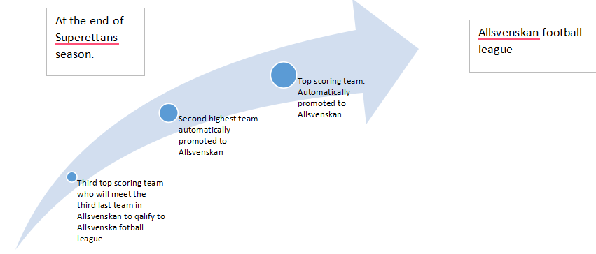

What is Superettan?
Superettan is the next highest football league in Swedish football. Originally Superettan was called division 2 but in 2000 they decided it was time for a name change. So, division 2 became Superettan.
There are 16 that compete playing both home and away games during spring and autumn during the season. For each game played the teams will be given a score depending on the match results such as win, draw or loss. Once they have played 30 games during a specific period the league season is finished. The most important is that all teams want to be at the first or second place in the league table to be guaranteed a spot in the highest level of football in Sweden namely Allsvenskan.The third highest team hasn’t lost out their opportunity to play in Allsvenskan, but they need to qualify for it. As the two highest scoring teams of Superettan get promoted to Allsvenskan that will also mean that two of the lowest scoring teams will be relegated to Superettan. The third lowest scoring team in Allsvenskan will then meet the third highest scoring team in Superettan where they will play for the final spot in Allsvenskan.  All teams in Superettan supports them at both home and away games. How much joy can a Superettan team give to their supporters in the home games? .Why Superettan for this project?
The choice of a second division is not random. Any second division would be a nice candidate for our needs. But I/we selected Superettan especially because it is a football category of our university’s country and maybe this would be to our advantage!
A second division presents great mobility, as every year a number of teams will be promoted and relegated. This number is not fixed but ranges from 4-6 (3 maximum promoted & 3 maximum relegated). This means that from one year to the other that the division will be in a significant degree different (up to 1/3, of 6 teams will be different). This makes things more complicated to measure the JoyPoints for a team? The strong teams that fell in the category and get promoted next year will have a short passing from the second division and, consequently, less joy points from a team that has a continuous presence in it. The results are not as predictable as in National Championships where the best teams will necessarily gain more (joy)points. In other words, our intention was to find a dataset that has many numerical data, (thus it would be easier to handle it), a funny concept and some unexpected results!